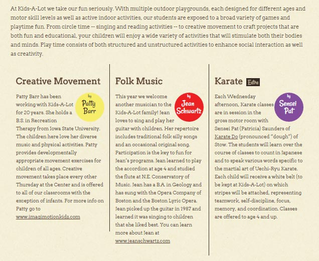
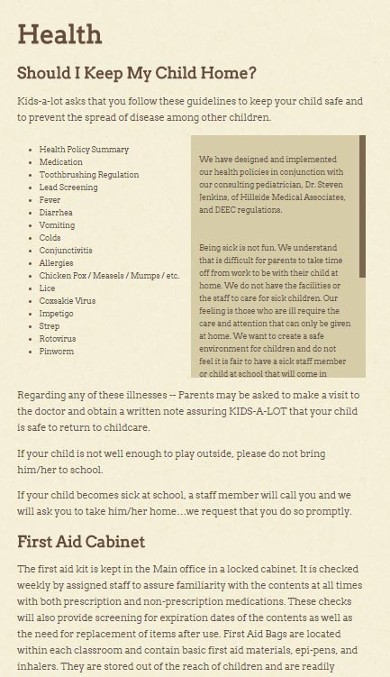
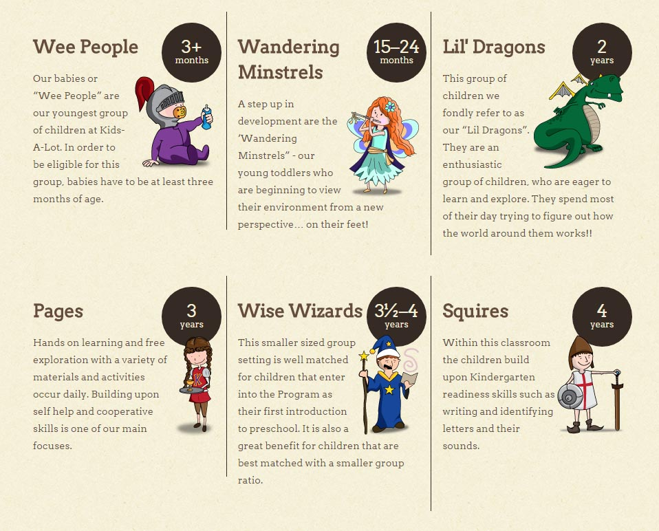
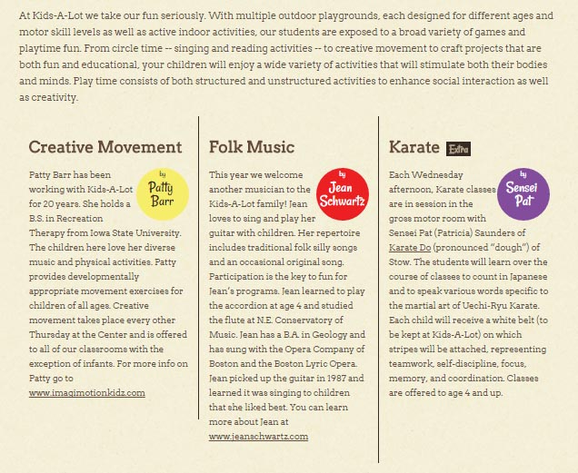
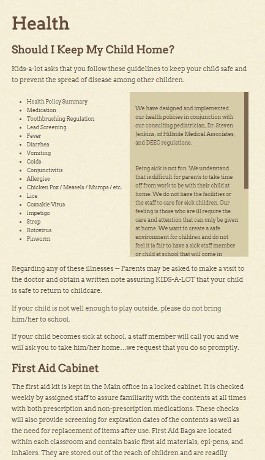
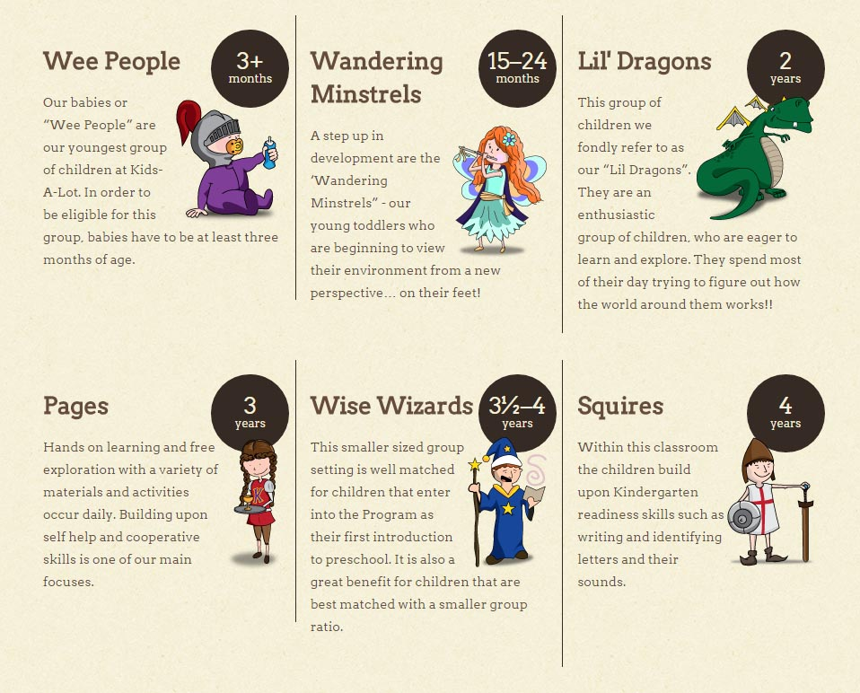
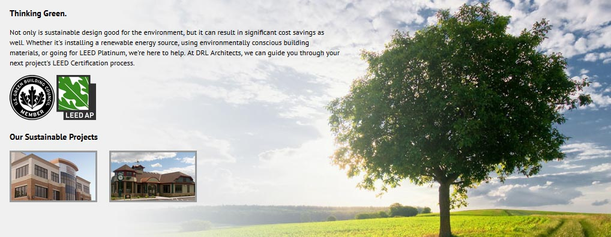
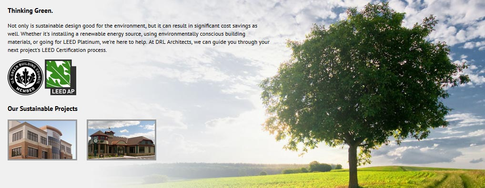

A little bit about myself.
I'm a versatile, creative technology professional with a wide range of skills including web development and design, graphic design, and information technology experience. I have a strong knowledge of front and back-end development and design, and
I utilize emerging technologies and frameworks to improve user experience on the web. I provide a commitment to quality and detail, and I have strong team skills. I'm seeking a dynamic, collaborative environment to further my skills and grow
professionally.
My Skills
HTML5
CSS3
Sass/SCSS
JavaScript
JQuery
Bootstrap
Foundation
LAMP Stack
PHP
Drupal
Wordpress
Hugo
Jade/Pug
Gulp
Grunt
Vagrant
Chef
npm
gem
ColdFusion
Photoshop
Illustrator
InDesign
Typography
UX/UI
 





 

Resume
LinkedIn
GitHub
Behance
Twitter
Dribbble
Codepen